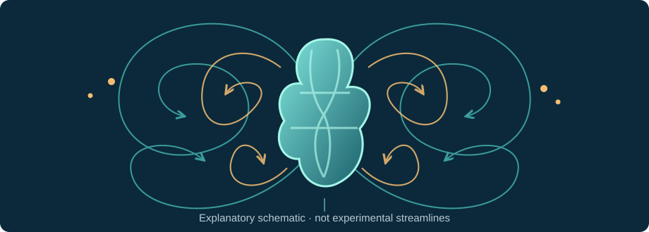
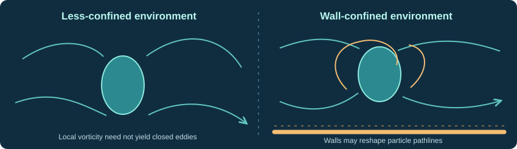

Biophysics · Hydrodynamics · Retrospective review · 2 November 2026
When cilia rearrange the flow.
An evidence-first reassessment of vortex arrays and the proposed feeding–swimming trade-off in starfish larvae.
William Gilpin, Vivek N. Prakash & Manu Prakash · Nature Physics13, 380–386 (2017); online 19 December 2016 · DOI: 10.1038/nphys3981 ↗

Original explanatory illustration of a ciliary-driven flow field. Not a reconstruction of Figure 1 or experimentally measured streamlines.
01 / The intellectual claim
What was observed, what was inferred?
The authors propose that the same peripheral ciliary band can be dynamically reconfigured between propulsion-favoring and prey-interception-favoring flow patterns. This proposal involves observations, a physical model and an ecological interpretation with different burdens of proof.
Direct observation
Ciliary reversals
Individual beating cilia form transient tangle- and splay-like regions, and the measured near-field flow changes with local beat direction.
Model inference
Hydrodynamic modes
Spatially higher-order slip terms in a two-dimensional squirmer model reproduce qualitatively different near-field patterns and simulated capture trajectories.
Functional hypothesis
Feeding vs swimming
Vortical states may improve prey capture in heterogeneous environments at a cost to forward propulsion. Direct ecological optimization is not established.
Testable claim
Anchor evidence
Forensic status
Complex vortical pathlines surround larvae
Fig. 1, pp. 380–381; particle-path visualization
Observed in laboratory chambers; confinement is important
Local beat reversals form defect-like regions
Fig. 2, pp. 381–382; ciliary microscopy and associated flows
Strongly supported locally
More vortex modes increase capture cross-section
Fig. 3, p. 383; normalized squirmer simulations
Computational/model result, not ingestion measurement
Dynamic low-dimensional feeding/swimming states
Fig. 4, p. 384; PIV, PCA, fits
Descriptive reduction supported; neural interpretation not demonstrated
Adaptive control optimizes larval feeding in patchy seas
Discussion, p. 385
Speculative ecological extension
The causal hypothesis is local ciliary reversals → spatially varying slip → flow reorganization → altered particle approach → improved ecological feeding performance. The initial links are much better demonstrated than the last.
Strongest alternative explanation: the intrinsic near-field velocity gradient is real, but nearby walls alter the flow topology enough to create the most striking closed recirculation cells. A real flow mechanism does not require every particle-path image to persist in unbounded water.
02 / Historical need, approach, benefit, competition
NABC in 2017—and what changes in 2026
2016–2017 · Publication context
Need
Explain how the same ciliary band supports swimming and interception feeding, and how larval morphology relates to flow and behaviour. The compromise itself was already recognized; see Strathmann & Grünbaum (2006).
Approach
Combine dark-field tracer imaging, microscopy of individual cilia, particle image velocimetry (PIV), and a higher-order two-dimensional squirmer model with local slip reversals.
Benefit
Time-resolved correspondence between microscopic beat reversals, changing near-field flows, and modelled near-surface interception. No measured percentage improvement in overall ingestion is established.
Competition
Traditional larval capture and clearance experiments; ciliary-reversal physiology; earlier low-Reynolds-number squirmers; and boundary-driven eddy explanations, including Pepper et al. (2010).
2026 · Retrospective context
Unresolved need
Show a functional benefit in unconstrained, three-dimensional, naturally heterogeneous prey environments—not just a compelling flow visualization.
Better approach
Volumetric velocity mapping, controlled chamber-height series, direct ingestion counts, quantitative ciliary tracking and causal perturbation in the same individual.
What has endured
Dynamic ciliary patterning as an active boundary condition; analysis of low-dimensional flow behaviour; inspiration for programmable artificial cilia.
Present competitors
Realistic 3D larval-flow reconstructions and measured grazing rates for biological inference; magnetic, acoustic, pneumatic or optically actuated artificial cilia and passive microfluidic devices for engineering.
Apples-to-apples performance comparison is not possible without matched prey concentrations, capture criterion, chamber geometry, operating energy, larval size and a common measured feeding-rate denominator.
03 / What made this possible?
The insight is the boundary condition, not a new fluid law
Changes in the direction of the effective tangential ciliary slip act as local boundaries between adjacent flow regions. The authors connect these microscopic reversals to the organism-scale Stokes flow using a generalized squirmer representation, separating a propulsion-related first mode from higher-order flow patterns.
us(θ) = ∑ Bn sin(nθ)Conceptual slip-mode representation; exact velocity field and coefficients are given in the original paper, Eq. (1).
Conceptual
Global flow can be reconfigured by the ciliary activity pattern without changing body geometry. The defect analogy helps describe local directional reversals; the paper does not establish a conserved topological charge.
Instrumentation and analysis
Optical microscopy, tracer pathline visualization (Flowtrace), PIV, scanning electron microscopy, analytical squirmer modes and principal component analysis. Most elements pre-existed; their integration was distinctive.
Necessary versus sufficient
Local ciliary imaging plus flow mapping was necessary to tie surface forcing to external velocity. Higher-order modelling was sufficient for a parsimonious phenomenological account, not a demonstration of neural control or ecological fitness.
Breakthrough type
Primarily observation plus biophysical explanation, supported by integrative methodology. Not a new fluid-dynamic law and not a calibrated gain in industrial or ecological performance.
Why the “topological defect” analogy needs care
A tangle or splay marks where the effective direction of surface beating reverses. Similar visual structures appear in liquid-crystal and spin systems, but naming them defects does not establish topological protection, a winding-number invariant, conservation or a measurable defect charge. Local ciliary orientation maps and a defined order parameter would be needed for that stronger claim.
04 / Experimental audit
Figure by figure: leverage and confounds
01
Vortex arrays around a starfish larva Confinement concern
Evidence: In Fig. 1 the authors visualize nine counter-rotating regions around an approximately eight-week-old larva held in a gap of roughly 0.5 mm; 6 µm tracer beads are used in the depicted stacked sequence. The paper describes similar flow motifs in multiple animals.
Limit: Slow, coherent pathlines in a restricted gap do not establish the same closed streamlines in open water. Nearness to walls changes hydrodynamic Green functions and can create recirculation. Biological n values reported for different observations are not independent replicates of every flow quantification.
Decisive control: sweep chamber gap and distance to boundaries, compare freely swimming and tethered animals, and reconstruct a 3D flow field.
02
Transient ciliary tangles and splay regions Strong observation
Evidence: The microscopy resolves reversal boundaries, +/− defect-like configurations, and a correspondence between local ciliary orientation and adjacent counter-rotating near-field regions. The kymograph shows a structure reorganizing on an order-of-10-second scale.
Limit: A visible spatial reversal is not itself proof of neural causation or topological conservation. The number of animals imaged for a subpanel should not be conflated with the number of independent neural-control experiments.
Decisive control: quantitatively map ciliary orientation and phase, then perturb neural or chemical signalling while simultaneously measuring near-field velocity.
03
Trade-off between swimming and capture cross-section Model-dependent
Evidence: A two-mode squirmer produces different streamline patterns as the higher-order mode changes; simulated incident trajectories enter a predefined interception distance more frequently for some higher-vortex patterns. Under the paper’s normalization, swimming speed decreases as more vortices are introduced.
Limit: This is not a matched-power physiological experiment and does not directly measure prey ingestion, nutritional uptake, or net ecological fitness. Passive simulation trajectories and an interception criterion are not equivalent to ingestion by active algae.
Decisive control: measure simultaneously propulsion, hydrodynamic power, capture probability, and actual ingestion in animals whose ciliary mode changes.
04
Time-dependent flow modes and “eigenstrokes” Interpretation qualified
Evidence: Surface-velocity kymographs, PIV, fitted squirmer modes and PCA reveal changes in the relative prominence of the propulsion-related first mode and higher-order modes during a three-minute sequence.
Limit: PCA and squirmer fits analyze related velocity data, rather than proving separate neuronal programs. The choice of mode number, geometrical approximation, fitting noise, temporal dependence and animal-to-animal generality affect interpretation.
Decisive control: verify out-of-sample predictive accuracy and independently label feeding/swimming behaviour while perturbing the underlying control process.
05 / Dimensional and numerical audit
What do the numbers actually support?
6 Hz
Mean ciliary beating frequency
30 µm
Approximate cilium length
300 µm/s
Reported maximum local tangential flow speed
~10 s
Reorganization timescale for defect-like regions
Reported quantity
Value
Role / audit caveat
Tracer particles, Fig. 1
6 µm
Pathline imaging; do not treat paths as identical to streamlines in unsteady flow
Passive bead size, prey-tracking mixture
0.75 µm
Flow tracers, not captured algal prey
Active algal prey
~6 µm
Rhodomonas lens, capable of active motion
Representative imaging gap
~0.5 mm
Confinement relative to animal dimensions is a key physical boundary condition
Vortex visualization animals
29 larvae
Original narrative; sample sizes vary by subexperiment
Freely swimming behaviour observations
37 larvae
Does not by itself demonstrate free-water ingestion advantage
Ciliary line density
~3 cilia/µm in band
Compared with <0.1 cilia/µm on body surface
Sanity check: low-Reynolds-number regime
Re = UL/ν ≈ 0.003U = 100 µm/s; L = 30 µm; water kinematic viscosity ν ≈ 10⁻⁶ m²/s.
For the same velocity but a 500 µm length scale, the estimate is instead Re ≈ 0.05. Both are in a viscous-dominated range, but the exact Reynolds number is scale-dependent; neither estimate eliminates the effects of confinement, unsteadiness, or 3D morphology.
Fast beats and slow reorganization
A 6 Hz beat has a period of approximately 0.167 s; a 10 s reorganizing defect spans roughly 60 beat cycles. The separation of timescales suggests regulation or collective coordination beyond an individual ciliary stroke. It does not distinguish neural, intracellular, elastic, or hydrodynamic mechanisms without intervention.
This rate expression is dimensionally consistent for encounters during movement. However, if propulsion decreases while interception cross-section grows, the product need not increase. Moreover, a nearly stationary organism can feed by ciliary pumping, so this form is not a universal expression for ingestion when pumping persists independently of translation.
Illustrative state — not data from this paper
Swimming
Vortical
Relative cross-section (σ/σ₀)
1.0
3.0
Relative speed (v/v₀)
1.0
0.2
Relative σv (encounter-rate proxy)
1.0
0.6
The last table is a mathematical counterexample illustrating how a larger capture cross-section may coexist with a smaller total encounter-rate proxy. Its values are invented for the illustration and are explicitly not experimental measurements.
06 / Key theoretical caveat
Is the swimming–feeding trade-off inevitable?
vswim = − B1 / 2Within the authors’ two-dimensional squirmer conventions, propulsion depends on the first slip mode.
At low Reynolds number, the governing Stokes equations are linear. In an unconstrained mathematical description, changing higher-order Bn while keeping B1 fixed need not reduce swimming speed. A trade-off appears when realistic limits—available power, maximum beat speeds or permitted ciliary patterns—couple the modes.
The authors normalize two-mode swimmer configurations by maximum surface beating speed and vortex-region size. That produces a specific model trade-off, not a demonstrated universal physical necessity or a measured fixed-energy budget in live animals. This normalization deserves explicit testing against physiological constraints.
Critical distinction: “Our normalized model exhibits higher capture cross-section as swimming slows” is well supported by the simulations. “Larvae must sacrifice swimming to maximize ingestion” is a stronger biological conclusion requiring measured ingestion and a defensible energetic comparison.
How would a matched-power comparison change the analysis?
Define the surface forcing and calculate hydrodynamic dissipation or experimentally estimate actual power expenditures for each state. Compare propulsion, prey interception and ingestion at equal power and matched prey density. Evaluate sensitivity to ciliary beat limits, finite body lobes, the capture distance, active prey behaviour and wall spacing. Without such a comparison the sign and magnitude of a real functional trade-off remain uncertain.
07 / Published independent challenge
The wall-effect dispute changes the meaning of Fig. 1
von Dassow, Emlet & Grünbaum, Nature Physics (2017) argued that boundaries strongly affect eddies around larvae. Their comparison of coverslip-confined specimens and specimens farther from nearby walls challenged extrapolation of the most dramatic closed vortices to freely swimming larvae.
In their published reply, Gilpin and colleagues accepted that confinement affects closed recirculation but emphasized an essential distinction: local vorticity is not the same physical observable as a closed particle orbit. Reversal of surface ciliary slip can generate local shear/vorticity even where particles do not trace closed eddies.

Two alternative flow settings shown schematically. These curves are conceptual, not experimental records, fits, or a reproduction of either group’s measurements.
Question
Forensic adjudication
Do local ciliary reversal regions exist?
Yes, the original near-field observations strongly support them.
Can chamber boundaries alter streamlines?
Yes; independent experimental and theoretical precedent exists (Pepper et al., 2010).
Do identical closed vortices persist around unconstrained larvae?
Not demonstrated convincingly by the reviewed material; contested.
Can local vorticity survive without closed eddies?
Yes, physically possible and consistent with the authors’ reply.
Does intrinsic vorticity prove a feeding advantage?
No; a direct ingestion comparison is still required.
Assessment: the response usefully rescues the near-surface physical mechanism, but it does not fully resolve the ecological extrapolation or validate the exact global eddy patterns in unbounded water.
08 / Retrospective evidence
What subsequent work actually tested—or reused
Feeding–swimming compromise recognized
Strathmann & Grünbaum discuss morphology and functional compromise before the 2017 study. This prevents overclaiming priority for the general trade-off.
Walls create eddies near microfilter feeders
Pepper and collaborators show how nearby boundaries can generate eddy structures, making wall separation a crucial control rather than an afterthought.
Boundary effects around ciliated larvae
von Dassow and colleagues publish a methodological counterinterpretation; Gilpin and colleagues clarify the difference between vorticity and recirculation in their reply.
Changing ciliary flow architecture in Stentor
Independent work on regenerating Stentor demonstrates rearrangement of ciliary flows. Supports the general mechanistic theme, not starfish-specific feeding optimization.
Programmable artificial ciliary structures generate controlled flow and particle manipulation. Engineering adoption is not biological replication.
Coral larvae, ciliary PIV and prey-response modelling
Further experiments and theoretical models reuse the idea that complex ciliary or squirmer modes influence flow and transport. They do not settle the original direct-ingestion question.
Original claim
Retrospective evidence status
Independence caveat
Ciliary reversal changes near-field forcing
Supported, with analogous independent observations
Not all tests use starfish larvae
Complex time-varying ciliary flows
Supported across different organisms
Flow geometry varies with species and enclosure
Iconic closed vortex arrays persist in open sea
Contested
Direct published challenge exists
High-order modes change trajectories
Supported within mathematical models
Model reuse is not physiological verification
Vortical state increases actual larval ingestion
Not independently established in the sources reviewed
Absence of a located decisive test is not proof of falsehood
Neural programs cause distinct eigenstrokes
Unresolved
No decisive selective neural perturbation in this reviewed record
09 / Impact and historical legacy
A durable physical idea, not a settled ecological optimum
Scientific insight
Dynamic surface forcing is a useful organizing principle for complex ciliary flow fields. The paper connects phenomena at cilium and organism scale.
Reusable technique
Flowtrace, documented separately in Journal of Experimental Biology (2017), is a concrete methodological contribution for visualizing coherent flows.
Engineering inspiration
Starfish-inspired artificial ciliary arrays demonstrate controlled pumping and particle handling, illustrating transfer of a design motif, not field validation of the biological model.
On 2 November 2026, a Scite record for the original DOI showed 128 citing publications, with smart-citation statements mostly classified as mentions. Database counts vary; classified mention/support/contrast totals are screening aids rather than a measure of truth. No citation count independently establishes a mechanism.
Long-term significance is therefore best assigned to the observable ciliary reversal dynamics, the low-dimensional flow framework and downstream methods. Broad uptake as a fully verified model of ecological feeding efficiency is not established by the evidence reviewed.
10 / Transparent multidimensional assessment
Evidence-anchored scorecard
Independent 1–5 assessments; no total score or misleading average. The score is an informed retrospective judgment, not an empirical metric. Ratings are accompanied by reasons and confidence.
Conceptual originality
Distinctive integration; trade-off concept previously known · Moderate confidence
4/5
Methodological rigor
Multiple modalities but key confinement limitations · Moderate confidence
3/5
Strength of evidence
Strong local observation; functional claim model-dependent · Moderate confidence
3/5
Performance advance
No matched measured ingestion-efficiency improvement · Insufficient evidence
N/A
Independent validation
Analogues and devices exist, direct dispute remains · Moderate confidence
2/5
Long-term impact
Meaningful specialist influence, not universal adoption · Moderate confidence
3/5
Scoring rule: 1 = very weak; 3 = credible or moderate; 5 = exceptional. Independent validation scores refer to direct corroboration of the anchor’s mechanisms, not merely later papers citing it.
11 / Expert discussion and falsification
Ten questions worth asking the authors
What survives removing the walls?
Quantify flow and capture against wall distance. A 3D series distinguishes intrinsic shear from confinement-created closed eddies.
Where is the direct ingestion comparison?
Track prey ingested per time across natural ciliary modes, with concentration and developmental stage controlled.
What creates the energetic trade-off?
Demonstrate a measured power or ciliary-capacity constraint coupling B₁ and higher modes.
Why is 2D circular geometry adequate?
Compare predictions to a lobed, 3D organism with volumetric flow reconstruction.
Are these genuine topological defects?
Specify an order parameter, measure winding and identify physically meaningful invariants.
Are the PCA axes distinct behavioural programs?
Validate modes across larvae, noise levels and out-of-sample recordings against independently labelled behaviour.
How sensitive is simulated capture?
Vary interception distance, prey activity, diffusion and repeated exposure to the same trajectory.
Can neurons causally control the modes?
Selective stimulation or inhibition should shift ciliary reversals and flow without broadly disabling motility.
Are vortices useful in patchy seas?
Measure net ingestion and exploration in spatially heterogeneous prey distributions.
What is the state-dependent energy cost?
Compare hydrodynamic dissipation and biological energetic investment of swimming and feeding modes.
12 / Proposed decisive test
One experiment with four linked measurements
A · Geometry
Wall separation and 3D velocity
Image freely moving or minimally restrained larvae over a controlled gap series and recover volumetric velocity, vorticity and closed particle trajectories separately.
B · Cilia
Beat direction and phase
Simultaneously map ciliary reversals, phase coordination and defect evolution against the reconstructed local hydrodynamic field.
C · Function
Actual ingestion rate
Quantify prey captured and ingested per unit time in matched uniform and patchy prey environments; do not replace ingestion with geometric interception alone.
D · Causality
Selective perturbation
Perturb ciliary reversal or its regulators and test whether altered flow modes predict feeding changes independently of swimming-speed shifts.
The main discriminating observable should be measured ingestion rate as a function of ciliary mode, swimming speed, prey concentration and spatial prey distribution. A robust, energy-matched advantage that persists far from walls would materially strengthen the ecological claim.
13 / Final synthesis
Which conclusions survive scrutiny?
Strongest defense
The authors visually and quantitatively connect local ciliary reversals to complex, changing flow patterns and demonstrate an economical physical representation. This is valuable regardless of the full ecological interpretation.
Strongest skeptical interpretation
Confinement can accentuate or produce striking closed eddies, and the model’s increased interception cross-section is not a verified improvement in ingestion, energetic efficiency or ecological fitness.
Final judgment: A significant mechanistic and observational paper, not definitive proof that larvae optimize feeding by sacrificing propulsion to create vortices. The main unresolved issue is whether the inferred feeding benefit persists in 3D unconfined flow under biologically realistic conditions.
Strathmann & Grünbaum, Integr. Comp. Biol. (2006). Prior work on feeding–swimming compromises. doi:10.1093/icb/icj031
03
Pepper et al., J. R. Soc. Interface (2010). Boundary-generated eddies near microscopic filter feeders. doi:10.1098/rsif.2009.0419
04
von Dassow, Emlet & Grünbaum, Nat. Phys. (2017). Independent published boundary-effect critique. doi:10.1038/nphys4154
05
Gilpin et al., Nat. Phys. (2017). Reply distinguishing local vorticity from closed recirculation. doi:10.1038/nphys4166
06
Gilpin et al., J. Exp. Biol. (2017). Flowtrace visualization method. doi:10.1242/jeb.162511
07
Reorganization of complex ciliary flows around regenerating Stentor coeruleus, Phil. Trans. R. Soc. B (2020). Independent related ciliary-flow experiment. doi:10.1098/rstb.2019.0167
08
Ultrasound-activated ciliary bands for microrobotic systems inspired by starfish, Nat. Commun. (2021). Engineering descendant. doi:10.1038/s41467-021-26607-y
09
Ciliary propulsion and metachronal coordination in reef coral larvae, Phys. Rev. Research (2023). Related independent biological extension. doi:10.1103/PhysRevResearch.5.L042037
10
Microfluidics for hydrodynamic investigations of sand dollar larvae, AIP Advances (2024). PIV/Flowtrace methodological reuse under confinement. doi:10.1063/5.0230905
11
Escape from the predator-induced flow: smart prey strategies with steering and swimming actions, Soft Matter (2025). Later higher-order squirmer modelling. doi:10.1039/d4sm01399a
Sources, verification, access and interpretive limitations
This dossier is a retrospective critical assessment, not a new replication or a systematic meta-analysis. The original seven-page main article and its four figures were reviewed. The complete supplementary PDF, all videos, raw PIV datasets, full fit diagnostics, simulated capture-code sensitivity and independent biological replicates were not comprehensively audited. Quantitative calculations are explicitly identified; the hypothetical counterexample is not paper data. Later studies using related flow physics or inspired devices do not count as direct replication of ecological feeding advantage.
Scite forward-citation screening and targeted primary literature were reviewed on 2 November 2026. Citation databases are incomplete and differ in coverage. No formal correction or retraction was identified in the checked records; the 2017 published scientific exchange is not a retraction.
Generated vector illustrations on this page are explanatory schematics drawn for this review. They are not experimental figures, reconstructed velocity fields or licensed reproductions of publisher artwork.